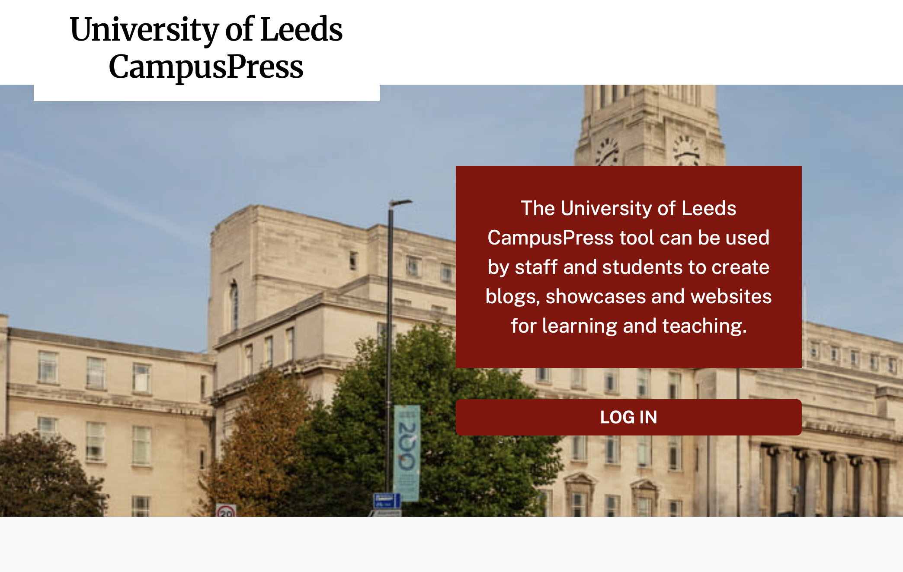

Digital Practice
Workshop tasks by Kyler.
On the first workshop of digital practice, I learned how to creat website using CampusPress and GitHub.
CampusPress is a website-building platform used by the University of Leeds to help students and staff create and manage websites. It provides tools for designing pages, publishing content and sharing information online, often without requiring advanced coding skills.

GitHub is an online platform for storing, managing and sharing projects, especially software and websites. It uses Git version control to track changes, making it easier for individuals or teams to collaborate, review updates and maintain different versions of their work. Users can also publish project pages, report issues and contribute to open-source projects.